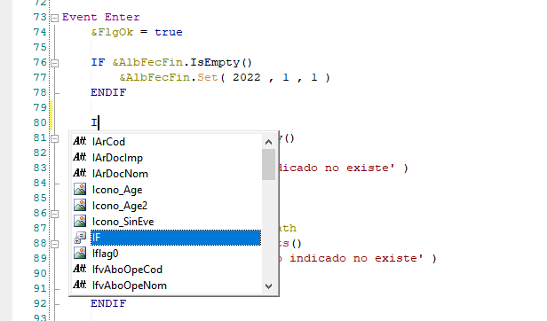

Predicción de código
Esta extensión es una función de autocompletado de código Genexus con Machine learning. Intenta predecir la siguiente
palabra que se va a escribir en el editor de código de Genexus.
La extensión provee una función para proponer, de entre las palabras que propone la extensión
de Autocompletado extendido, cual es la más probable. En este caso, la
extensión automáticamente selecciona esta palabra más probable. Por ejemplo si se escribe "I" y el modelo decide que
la palabra más probable de entre las que aparecen en la ventana de autocompletado es un "IF", la selecciona automáticamente:

En concreto, se hacen dos cosas:
-
La lista de autocompletado tiene un tamaño limitado: En kbases grandes, por rendimiento, no se pueden cargar en la lista TODOS los
objetos de la kbase que empiecen por el texto escrito, y hay que reducir la cantidad que se pone en la lista. Esta extensión
precarga los objetos con un nombre mas probable.
-
De entre las opciones cargas en la lista, selecciona automáticamente la que el modelo cree que es la mas probable.
Limitaciones
-
La extensión sólo soporta objetos de tipo Transacciones, Workpanels, Webpaneles, Procedures y SDPanels.
-
Si hay distintos objetos con el mismo nombre, la extensión puede no distinguir correctamente a que tipo de objeto se refiere.
Por ejemplo, si se tiene un procedure con nombre "CustomerDelete", y una imagen con el mismo nombre, la extension puede
usar como entrada al modelo uno por otro. La extensión seguirá funcionando, pero en estos casos puede hacer predicciones
incorrectas. Lo mismo puede ocurrir si se tienen objetos con el mismo nombre en distintos módulos.
Se han implementado algunas heuristicas para intentar descartar algunos tipos de objetos (por ejemplo, en una llamada a
".FromImage()" se espera una imagen), pero no son completas.
Junto con la extensión se incluye un modelo entrenado con varias Kbases de LSI (aprox. 10.600 objetos en total).
La extensión se habilita en la configuración, en la pestaña Autocomplete:
| Use prediction model |
Indica si usar el modelo de predicción:
- Do not use prediction model: No usar el modelo de predicción
- Use model distributed with Lsi.Extensions (TF Lite): Usa el model de predicción entrenado que se
distribuye con las extensiones
|
| Debug prediction model |
Si se marca, se muestra información de debug de las palabras de autocompletado, en la propia ventana de
autocompletado y en la ventana de Output
|
El resto de opciones son para entrenar y usar un model propio, y se explican en los apartados correspondientes. Más información:
{kind=link}